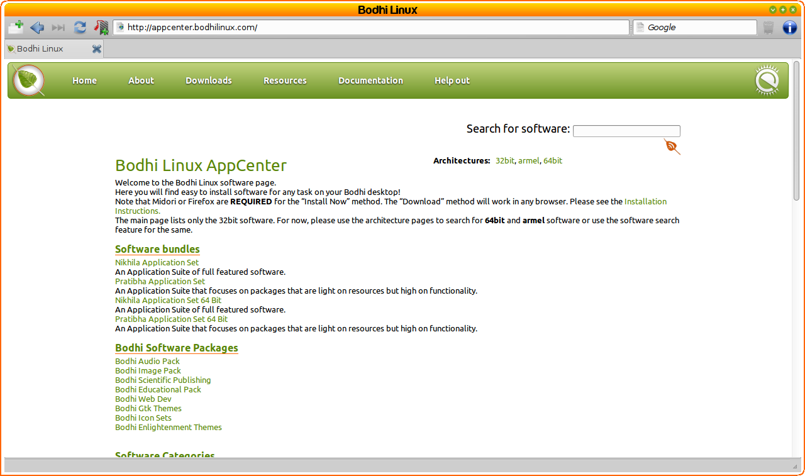

[cliqui una imatge per ampliar]
En la majoria de casos, haurà de disposar d'una connexió a Internet
per instal·lar programari a Bodhi Linux.
Accedeixi a aquesta pàgina si necessita ajuda Connecti
a Internet.
Actualització del sistema
La primera cosa que ha de fer un cop disposi de connexió a
Internet és actualitzar el seu sistema.
Hi ha moltes formes per fer-ho, però el mètode més simple és
obrint l'aplicació de terminal LXTerminal, que es troba a Menú>Aplicacions>Accessoris,
i executant aquesta comanda:
sudo apt-get update
&& sudo apt-get -y dist-upgrade
Nota: Aquesta comanda
utilitza l'eina de línia d'ordres apt-get
i pot executar-la cada vegada que vulgui actualitzar el seu
sistema (i aplicacions) a la versió més nova possible.
AppCenter de Bodhi Linux
{kind=link}
L'equip de Bodhi Linux ha creat AppCenter amb l'objectiu d'instal·lar les aplicacions més comunes d'una forma ràpida i fàcil. Encara que a l'AppCenter no trobarà totes les aplicacions que pot instal·lar a Bodhi Linux, si que trobarà les que considerem "les millors" de la seva categoria.
Bodhi Linux AppCenter està dissenyat per treballar amb Midori, el navegador per defecte de Bodhi. També s'ofereixen diversos conjunts d'aplicacions (meta-packages) que ofereixen aplicacions comunes i/o s'han escollit per complir amb un cas d'ús particular. Llegeixi sobre cada meta-package per saber què és el que li ofereix!
Aquí té una guia ràpida per conèixer com s'instal·len aplicacions amb Bodhi Linux AppCenter:
-
Trobi l'aplicació.
Si ja coneix el nom de l'aplicació que vol instal·lar, escrigui'l a la barra de recerca que hi ha a la part superior dreta.
Si no el coneix, navegui per les categories que apareixen a la primera pàgina. -
Navegui a la pàgina.
Sigui quin sigui el mètode que utilitzi per trobar l'aplicació, aquesta se li mostrarà amb un enllaç.
Cada aplicació té la seva pròpia pàgina amb una descripció de l'aplicació i una captura de pantalla. -
Instal·li!
Hi ha 3 mètodes per fer la instal·lació:
- Install Now
Aquest és el mètode més utilitzat per instal·lar una aplicació de Bodhi Linux AppCenter. Només fa falta que cliqui el botó "Install Now" i entri la seva contrasenya quan se li pregunti. Això és tot! L'aplicació i totes les seves dependències s'instal·laran automàticament.
- Download
Aquest mètode li permet descarregar una aplicació i totes les seves dependències en un sol paquet. Pot ser útil descarregar el paquet des d'una màquina amb una connexió ràpida a Internet i instal·lar després aquest paquet a una màquina que no tingui connexió a Internet o sigui lenta.
Aquí no es cobreix una descripció completa d'aquest mètode, però sí que es pot trobar a Bodhi Linux AppCenter. - Quick Install
Aquest mètode funciona més ràpid que els altres dos, però no li recomanem excepte que ja hagi acabat d'instal·lar un paquet amb el mètode "Install Now". El mètode "Install Now" resincronitza els fitxers índex del paquet a partir de les seves fonts de programari. "Install Now" doncs, abans d'instal·lar fa una actualització de tot el paquet a les seves versions més noves i després instal·la el paquet. En canvi Quick Install només instal·la el paquet, sense actualitzar-lo.
- Install Now
Enllaços (necessita connexió a Internet)
The
Bodhi Linux AppCenter
Complete Installation Instructions at the AppCenter
Gestor de paquets Synaptic
El Gestor de paquets Synaptic, es troba a totes les distribucions basades en GNU/Linux Debian, i està instal·lat per defecte a Bodhi Linux. Per accedir-hi, vagi a Menú>Aplicacions>Preferències>Gestor de paquets Synaptic.
Amb el Gestor de paquets Synaptic, té accés a totes les aplicacions dels dipòsits de Bodhi Linux i d' Ubuntu 12.04. (Un dipòsit de programari o repositori és un servidor/s on les distribucions Linux ofereixen les aplicacions perquè es puguin instal·lar.)
Miri Bodhi Linux Doc Wiki per trobar instruccions més completes de com utilitzar el Gestor de paquets Synaptic.
Enllaços (necessita connexió a Internet):
The
Bodhi Linux Doc Wiki
Synaptic
on
the Doc Wiki
apt-get & dpkg (avançat)
Les eines de línia d'ordres apt-get i dpkg
són "al darrera" de tots els mètodes que s'expliquen a dalt per
instal·lar aplicacions. Els usuaris avançats poden sentir-se
lliures d'utilitzar aquestes eines, però el seu ús es troba més
enllà de l'abast d'aquest document.
man apt-get o
man dpkg per veure el manual de cadascuna de les comandes.
També, els usuaris avançats poden utilitzar la instal·lació a partir del seu codi font.
Ex. Instal·lant paquets d'idioma
Nota: Aquests exemples només
expliquen com instal·lar els paquets d'idioma. Per
canviar l'idioma del sistema al paquet d'idioma acabat
d'instal·lar, accedeixi aquí.
Per instal·lar un paquet d'idioma amb AppCenter, vagi a Menú>Bodhi Linux>Add software. Això obrirà el vostre navegador per defecte (Midori en el cas de la primera instal·lació de Bodhi) cap a la pàgina Bodhi Linux AppCenter. Ara, desplaci cap avall fins a la secció Extra. És aquí on trobarà Language Packs. Cliqui per veure tots els paquets d'idioma disponibles que Bodhi ofereix. Un cop clicat el que desitja, només cal que per instal·lar-lo utilitzi un dels tres mètodes que s'han descrit a dalt: Install Now, Download, o Quick Install.
Per instal·lar un paquet d'idioma utilitzant el Gestor de paquets Synaptic, vagi a Menú>Aplicacions>Preferències>Gestor de paquets Synaptic. Li demanarà la seva contrasenya. Entri-la i premi enter. Quan s'obri, cliqui el botó Refresca de la barra d'eines. Això actualitzarà tots els paquets a la seva darrera versió, fet que farà que els paquets que decideixi instal·lar siguin els més nous. Un cop estigui fet, utilitzi la barra de recerca superior per cercar "bodhi language". Això mostrarà tots els paquets bodhi-language. Faci clic amb el botó de la dreta sobre el que desitja i seleccioni Marca per a instal·lar. Cliqui el botó de la barra d'eines Aplica. Una finestra emergent li mostrarà què s'instal·larà, quant d'espai ocuparà i li demanarà que cliqui el botó Aplica per confirmar la instal·lació del paquet d'idioma seleccionat. Una vegada que es cliqui, començara a instal·lar-se el paquet i l'avisarà un cop s'hagi completat.
Per instal·lar el paquet d'idioma utilitzant la comanda apt-get, necessitarà conèixer exactament el nom del paquet que vol instal·lar. Si coneix el nom, perfecte, però sinó li mostrem com fer-ho:
Per trobar un nom de paquet:
- Obri LXTerminal, el terminal per defecte de Bodhi Linux, a Menú>Aplicacions>Accessoris.
- Utilitzi la comanda:
apt-cache search "[paraules_clau]".
En aquest cas, les paraules clau podrien ser "bodhi language".
Quedaria així:apt-cache search "bodhi language". - Els paquests d'idioma apareixeran al terminal, els noms i tot. No tanqui encara el terminal.
Per instal·lar el paquet:
- A la finestra oberta de LXTerminal , escrigui la comanda:
sudo apt-get install -y [nom-paquet].
En aquest exemple, el nom del paquet serà bodhi-language-fr (paquet de l'idioma francès).
Quedaria així:sudo apt-get update && sudo apt-get install -y bodhi-language-fr. - Després de prémer enter, li apareixerà un munt de text descrivint què és el que està fent la comanda. Haurà d'esperar una miqueta.
- Quan torni a aparèixer la línia de comandes amb usuari@ordinador, la instal·lació haurà finalitzat.